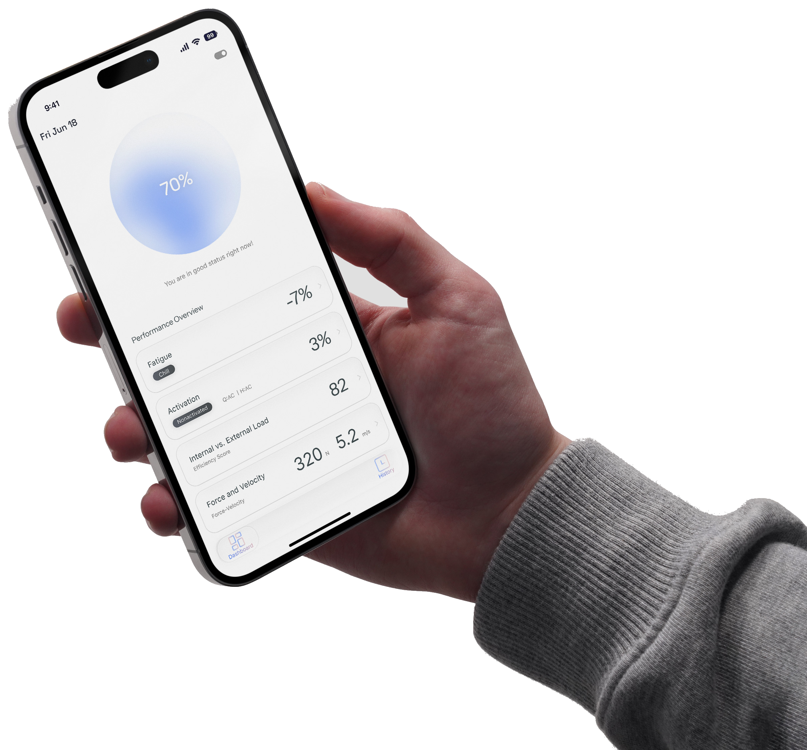
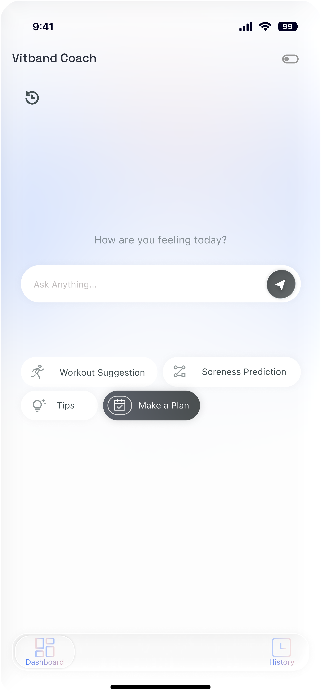
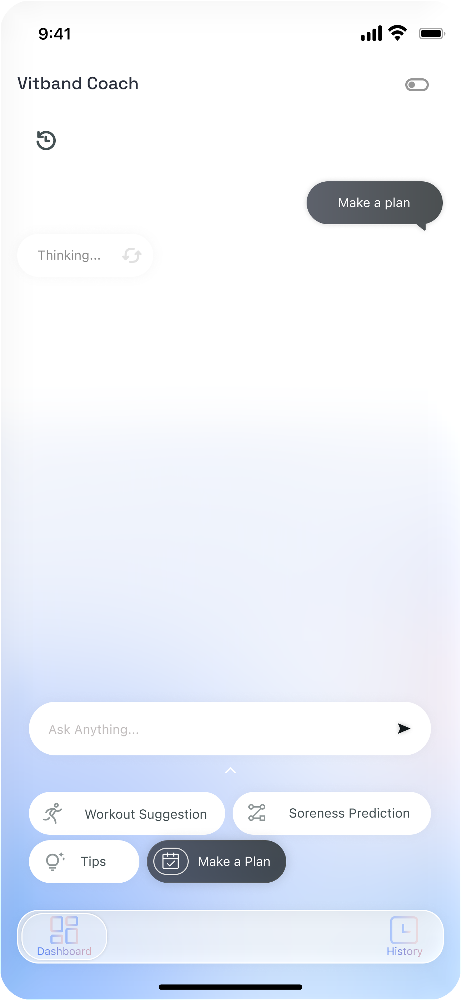
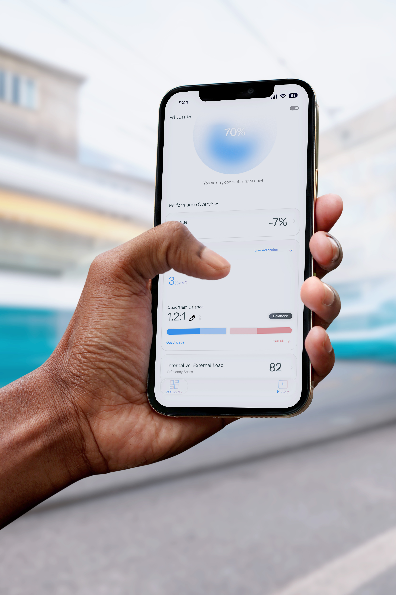
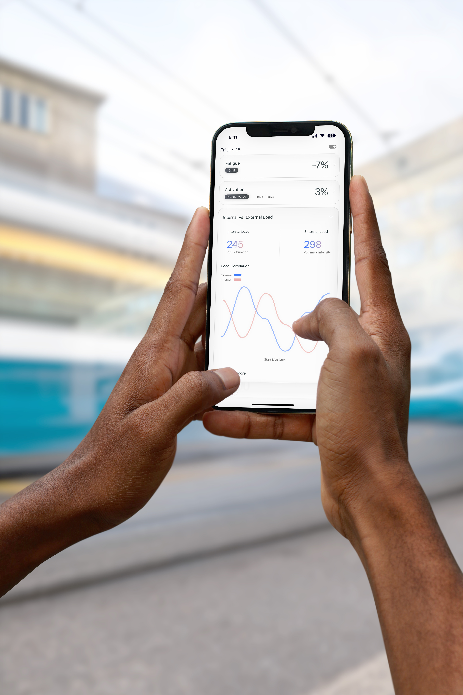
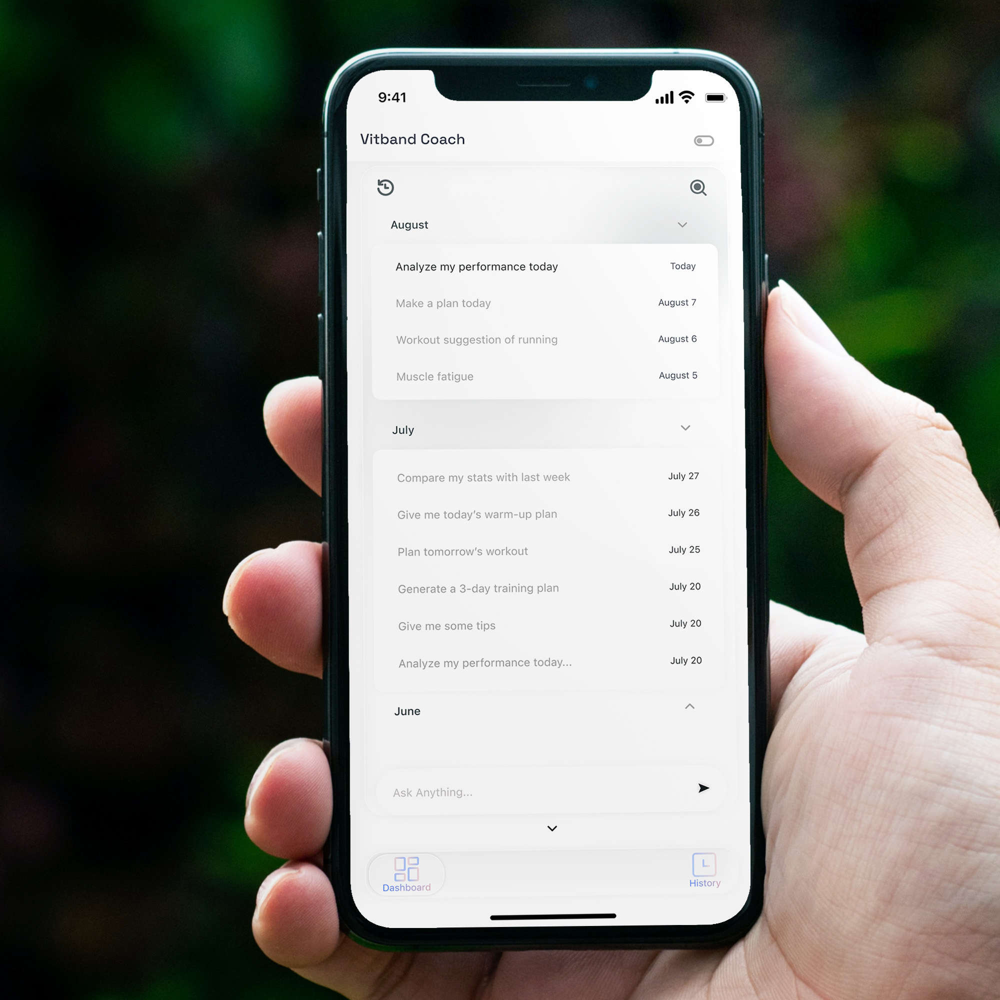

INFORMATION OVERLOAD
The original experience surfaced technical performance data without enough hierarchy, making it difficult to quickly identify what required attention.
PRODUCT DESIGN / UI UX
2025–2026
MUSCLE-FATIGUE MONITORING FOR TRAINING.
A fitness technology experience that translates real-time muscle performance data into clear, actionable training guidance.

01 / CONTEXT
VITBAND already had its core wearable technology and an early mobile prototype when I joined the project. While the prototype demonstrated the product’s technical capabilities, the experience was largely technology-driven: information was dense, the visual language felt academic, and key training insights required too much interpretation.
As the primary UI/UX designer, I was responsible for rethinking the mobile experience and translating complex muscle-performance data into a clearer, more intuitive product for everyday training.
02 / THE CHALLENGE
The original experience surfaced technical performance data without enough hierarchy, making it difficult to quickly identify what required attention.
Key information was distributed across multiple layers, creating unnecessary effort in a context where users need answers quickly.
Performance metrics communicated physical condition, but did not always make the next action obvious.
03 / RESEARCH
Rather than starting with visual styling, I first looked at how the existing product communicated information, how comparable fitness platforms structured complex data, and where VITBAND could simplify the training experience.
Reviewed the existing prototype to identify friction in navigation, information hierarchy, terminology, and visual communication.
Studied how established fitness platforms translate physiological data into recognizable performance signals and training guidance.
Worked with the team to understand the underlying muscle data, technical capabilities, and the information users needed during training.
Translated these findings into alternative information structures, interaction patterns, and visual models.
04 / COMPETITIVE LANDSCAPE
I looked at established fitness platforms including WHOOP, Polar, and Oura to understand how complex physiological information is translated into everyday training and recovery experiences.
Turns complex physiological data into recognizable performance signals.
Preserve data depth while making the meaning of each signal immediately understandable.
Provides detailed training and performance analysis.
Reduce navigation and information density when users need answers during an active workout.
Uses clear visual signals to make recovery and readiness easier to understand.
Differentiate VITBAND through active training and muscle-specific feedback rather than general wellness.
PRIORITISE MUSCLE-SPECIFIC TRAINING GUIDANCE.
REDUCE NAVIGATION AND METRIC INTERPRETATION DURING ACTIVE WORKOUTS.
05 / AUDIENCE SIGNALS
Existing audience research helped highlight which types of training information were perceived as most valuable.
WHAT THIS MEANT FOR THE DESIGN ↘
06 / KEY INSIGHTS
Performance data becomes more useful when users can understand what it means and what they should do next.
Pair important metrics with clear explanations and recommendations.
During training, users need to recognize their current condition without navigating through dense layers of information.
Create stronger hierarchy and surface the most important signals first.
Training feedback should reinforce effort and accomplishment rather than making progress feel like continuous depletion.
Use progress-oriented visual models wherever the underlying data allows it.
07 / DESIGN STRATEGY
01 / CLEAR
Surface the most important information first.
02 / ACTIONABLE
Connect performance signals to meaningful next steps.
03 / MOTIVATING
Frame feedback around progress and accomplishment.
04 / CONSISTENT
Build a visual language that works across monitoring, coaching, and history.
08 / EARLY EXPLORATION
Before refining the visual language, I explored how key information should be organized across the core product experience.
01 ─────────→ DASHBOARD
Current condition and immediate feedback.

02 ─────────→ AI COACH
Guidance within the training experience.
03 ─────────→ HISTORY
Progress patterns over time.
09 / KEY DESIGN DECISION
AI COACH / ITERATION 01
The early concept gave AI Coach a stronger character presence to make the product feel more conversational.

During internal design reviews, we found that the assistant competed with the dashboard for attention and introduced another visual focal point into an already data-heavy experience.
→We reduced the character-driven elements and repositioned AI as a layer of guidance within the training experience.

AI ASSISTANT
→TRAINING GUIDANCE
10 / KEY DESIGN DECISION
MUSCLE ENERGY / ITERATION 02
The original model represented muscle energy as a resource being depleted throughout a workout.
I proposed reversing the visual model so users could see their effort build throughout a training session rather than watching a number move toward zero.
The original logic was technically understandable, but experientially it created a negative signal: the harder users trained, the closer the interface moved toward zero.
By reframing the visualization around accumulated effort, the same training process could communicate progress and accomplishment more clearly.
11 / HIGH-FIDELITY DESIGN
The final visual direction brings together clearer information hierarchy, simplified navigation, and a more focused system for communicating training data.
Performance overview and immediate training status.
12 / INFORMATION HIERARCHY
During training, users should not need to study a dashboard. The interface prioritizes immediate muscle condition and training guidance before secondary historical information.
01 ─────────→ CURRENT STATUS
02 ─────────→ MUSCLE FATIGUE
03 ─────────→ TRAINING GUIDANCE
04 ─────────→ WORKOUT PROGRESS
13 / OUTCOME
The final experience brings monitoring, coaching, workout history, and performance feedback into one cohesive visual system.




14 / RECOGNITION
VITBAND was recognized with a 2026 Red Dot Award in Brands & Communication Design.
15 / REFLECTION
I learned that simplifying data requires prioritising what users need at each moment, not simply removing information.
I also had to coordinate information hierarchy, interaction patterns, and visual feedback across monitoring, coaching, and history instead of treating each screen as an isolated interface.